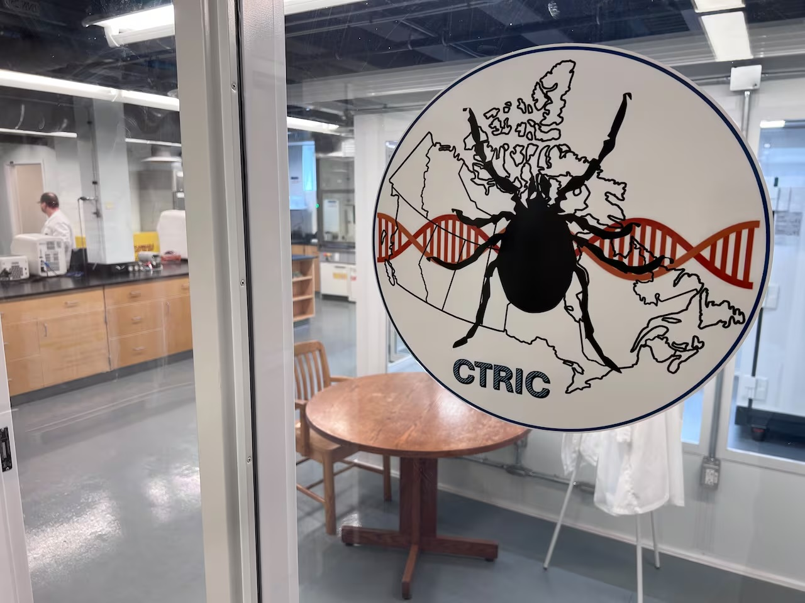
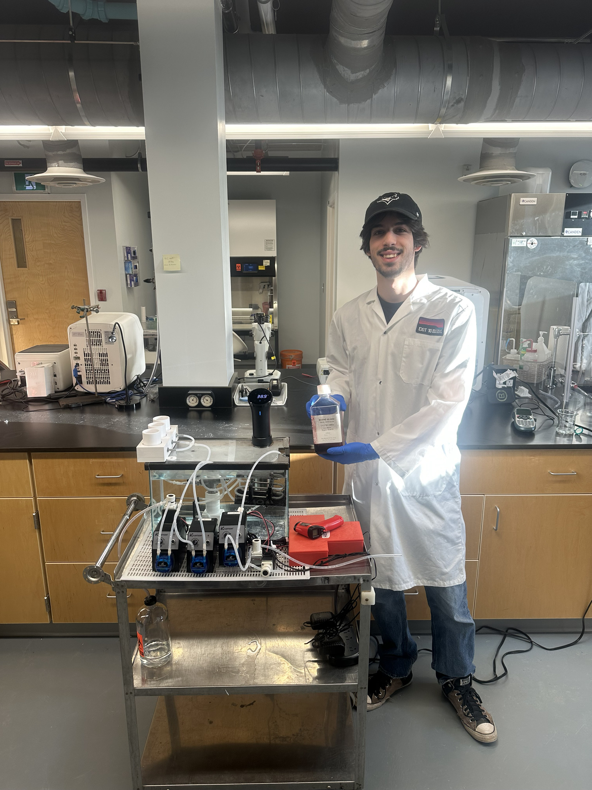
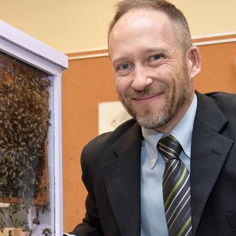

Acadia University · Wolfville, NS, Canada
Canadian Tick Research & Innovation Centre
Advancing Canada’s capacity in tick rearing, pathogen diagnostics, and repellency research — protecting human, animal, and ecosystem health.
Who we are
A national hub for tick science
CTRIC is a dedicated research and commercial laboratory housed within Acadia University’s Huestis Innovation Pavilion. We bring together leading researchers, government partners, and industry to tackle one of Canada’s fastest-growing public health challenges. Ticks and tick-borne diseases now affect thousands of Canadians each year, with case counts nearly doubling between 2022 and 2024. Climate change is accelerating tick range expansion — and Canada needs a domestic centre of excellence to respond.

Built on proven expertise
Our team brings together diverse expertise across tick biology, chemical ecology, molecular diagnostics, and thermal physiology.
Rooted in Atlantic Canada
Located in Wolfville, NS, CTRIC creates skilled employment in rural Atlantic Canada while delivering national and international impact through research, innovation, and strategic partnerships.
️ Biosafety first
CTRIC operates under biosafety standards, ensuring that all ticks produced are rigorously screened and pathogen-free. Our purpose-built containment facility protects staff, partners, and the environment while meeting the biosafety requirements for working with live ticks and tick-borne pathogens.
Reducing foreign dependency
CTRIC will provide locally reared ticks that are genetically relevant to Canadian environments, produced under rigorous biosafety standards — alongside fast, reliable pathogen testing for tick-borne diseases.
What we do
Three core service streams
CTRIC will offer specialized, fee-for-service capabilities to universities, government agencies, and industry partners across Canada and internationally.
Tick rearing & supply
Large-scale rearing of Ixodes scapularis (blacklegged tick) and Dermacentor variabilis (American dog tick) using artificial feeding systems — no live animals required. Canadian-reared ticks for academic, government, and commercial clients, with distribution beginning soon.
Pathogen testing & diagnostics
Molecular testing for Lyme disease (Borrelia spp.), Anaplasma, Babesia, Rickettsia, and other emerging tick-borne pathogens. Fee-for-service testing for researchers, health agencies, and commercial partners.
Repellency & acaricidal testing
Controlled laboratory evaluation of acaricides and repellents under standardized conditions. Supports Health Canada PMRA product registration and new product development for industry partners, including start-ups and established repellent and veterinary health companies.
Welcome to the lab
CTRIC and its amenities
Once operational, CTRIC will be housed within Acadia’s Huestis Innovation Pavilion — purpose-built for tick research, from colony maintenance and live tick supply to pathogen diagnostics and product testing.
Tick rearing
CTRIC will maintain year-round colonies of Ixodes scapularis and Dermacentor variabilis under controlled conditions, producing healthy, pathogen-screened ticks at every life stage. Ticks will be available for supply to research institutions, government agencies, and commercial partners, with the scale and consistency needed to support long-term programs.
Tick pathogen testing
CTRIC will offer fast, reliable detection of tick-borne pathogens — including Borrelia spp., Anaplasma, Babesia, and Rickettsia — in ticks submitted by researchers, public health agencies, and surveillance programs. Results will support disease monitoring, risk mapping, and research across Canada.
Repellency & acaricidal testing
CTRIC will test repellents, treated fabrics, and acaricidal formulations against live ticks under standardized laboratory conditions. Testing will generate the efficacy data needed for Health Canada PMRA registration, supporting the development of new products from early-stage research through to regulatory submission.
Meet our team
The people behind CTRIC
Our multidisciplinary team spans tick biology, chemical ecology, molecular diagnostics, and business development.

Research Assistant — Engineering Student
Department of Chemistry, Acadia University

Collaborator — Chemical ecology & pest management
Department of Biology, Acadia University
Collaborator — Climate, thermal biology & vector behaviour
Department of Biology, Acadia University